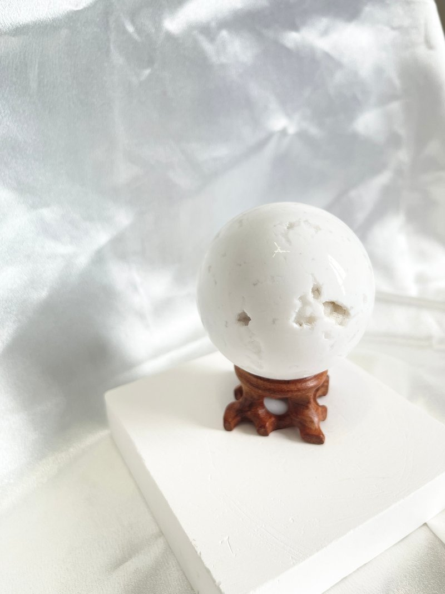
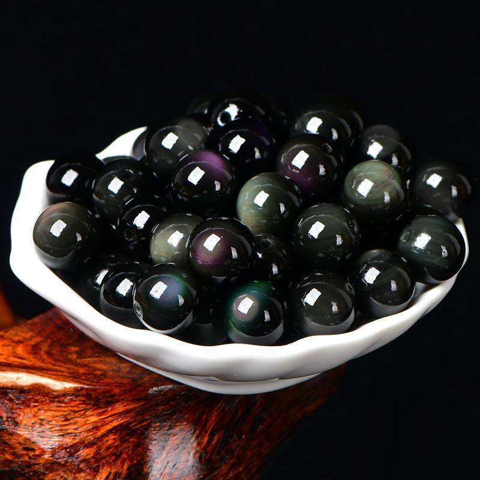
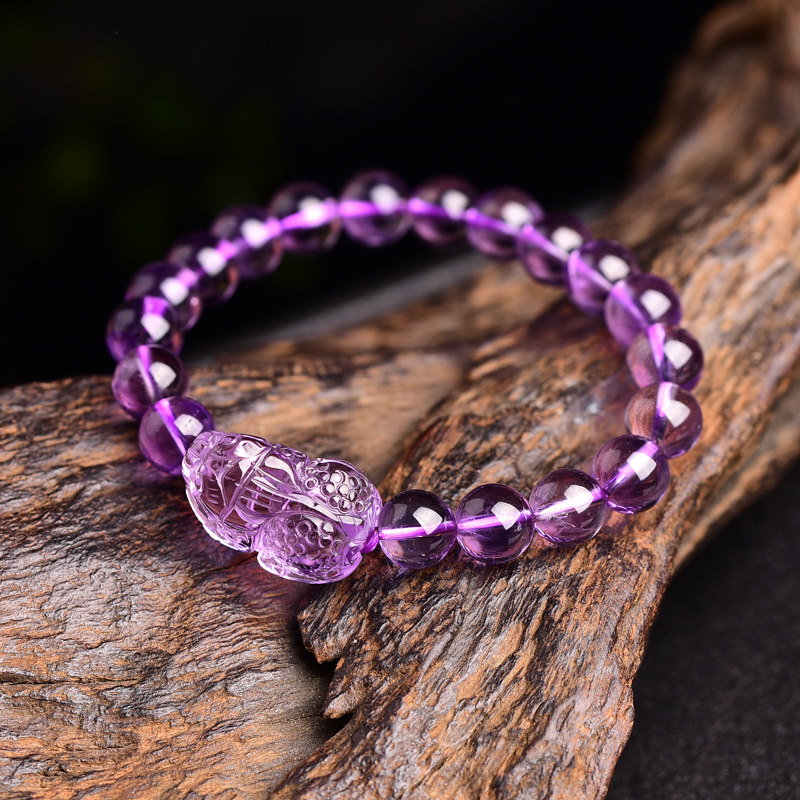
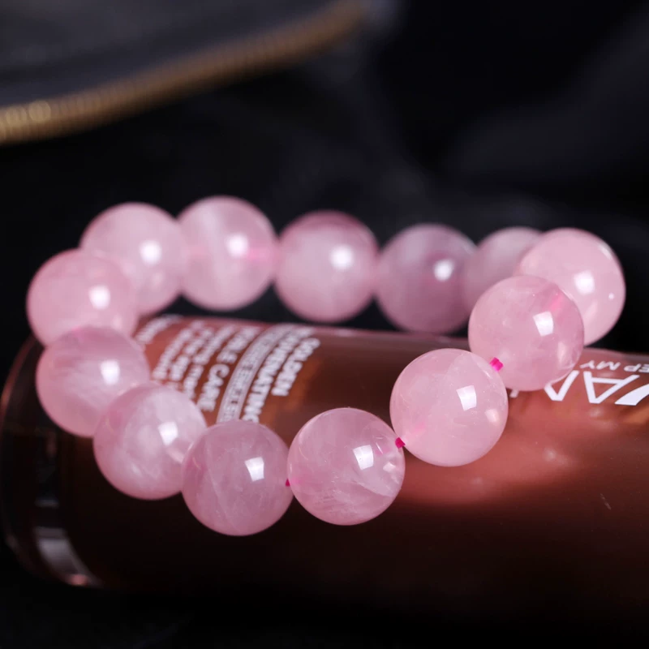

THE PEACE BRINGER
白瑪瑙 White Agate
「平和慈悲的護身符，安定情緒並帶來純粹的守護」
✦ 對應：頂輪、臍輪
✦ 五行：金、水
✦ 化學式：SiO₂
✦ 硬度：6.5 - 7.0 (莫氏)
靈魂的避風港
白瑪瑙自古以來被視為極具療癒力的寶石，其觸感溫潤如玉。在能量學中，白瑪瑙被認為能消除壓力、疲勞與濁氣，並對應到人體的心理層面，幫助佩戴者與內在自我達成和解。它雖然不具備水晶那樣強烈的放射頻率，但其細膩穩定的能量卻更能深入滋養心靈，起到安神息災的作用。
常見型態與生活應用

拋光原石 Tumbled Stone
外表平滑且帶有絲綢般的油脂光澤。適合握在掌心冥想，或隨身攜帶作為祈福的幸運石，能有效阻擋外界雜亂情緒的干擾。

藝術雕件 Artifact
因瑪瑙質地堅韌，常被雕刻成神獸或球體。擺放在玄關或辦公桌，能淨化空間氣場，營造和諧有序的氛圍，並象徵吉祥如意。
能量聯動組合
避邪化煞

＋ 黑曜石
白瑪瑙的純淨與黑曜石的威猛結合。在提供心靈安定的同時，構築一道堅實的能量屏障，防範小人與負能量入侵。
智慧啟發

＋ 紫水晶
當溫和的瑪瑙遇上靈性的紫水晶，能平息焦慮的情緒，讓大腦進入深度放鬆狀態，激發更深層的直覺與智慧。
溫柔療癒

＋ 粉晶
這是最適合女性與兒童的組合。兩者溫暖的震盪頻率相輔相成，能增進親和力、修復情感創傷，讓人散發母性般的柔美。
保養細節與辨識方式
- 避開強鹼：瑪瑙容易受強酸強鹼腐蝕。在清潔房屋或泡溫泉時，建議暫時取下白瑪瑙飾品，以免失去光澤。
- 月光淨化：與水晶不同，白瑪瑙更適合使用柔和的「月光消磁」或「土埋法」，能讓它的色澤更加通透潤澤。
- 真偽辨別：天然白瑪瑙常帶有細微的同心圓層紋或色帶，且重量較感扎實；若內部完全透明且輕飄飄，則可能是合成樹脂或玻璃。